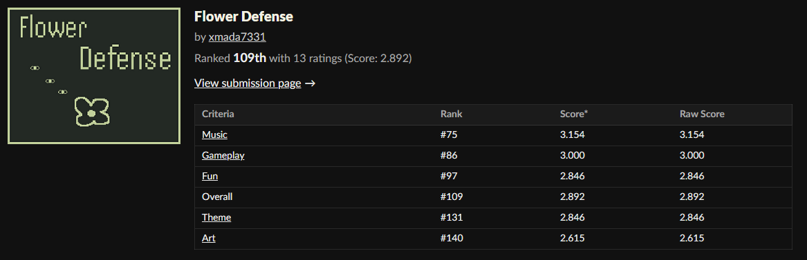
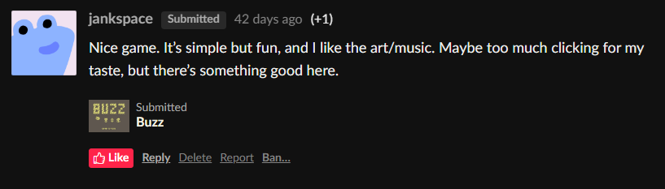
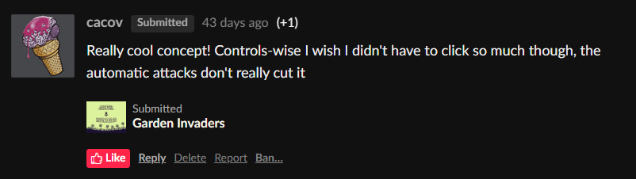
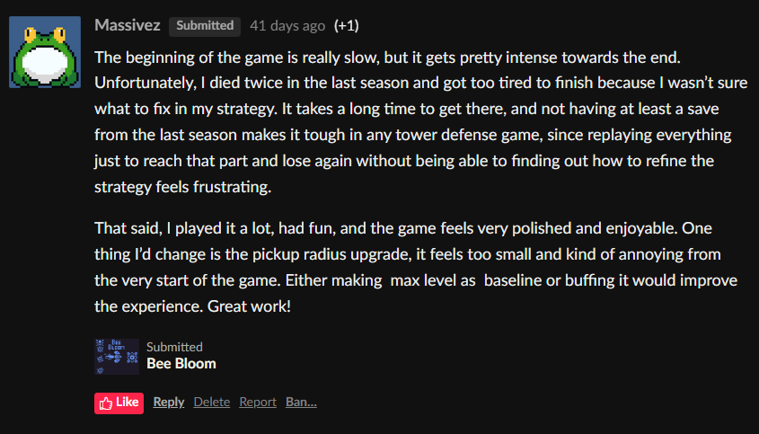
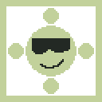

Flower Defense was another game I made for a game jam. This time it was B1T Jam 2. The main point of this jam was to made a game using only two colors. Amidst all other game jams and their ideas, this one stood out to me the most. I've played some great games with limited color pallettes (ex. SUPERHOT) and the idea was very limiting already, which appealed to me. The theme for this jam was "Bloom", so not only did I have to make a game using only two colors, I also had to fit in the theme.
Even before the jam started I began thinking about what kind of game will I make and how the two color will play a crucial part in storytelling and gameplay. Ultimately none of the ideas I had beforehand managed to make its way into the final game, but I do not regret it. After the theme was announced publicly all other ideas didn't seem to fit (although surely there would have been a way to adjust it somehow).
At first I started to come up what two colors I want to work with. There were a couple of ideas straight up. I wanted to come up with colors with good contrast, but not too obvious like black-white or red-blue. I was still thinking about using them gameplay wise or storytelling wise, but ultimately decided not to. I settled for a simple tower defense game, where the player has to defend himself from bugs and survive until the winter. This time I had less time as B1T Jam lasted only for a week from August 11th to August 18th. But I already had a pretty good idea of what I want my game to be, so I didn't have to spend days coming up with something else. Tight deadline forced me to work every day for as many hours as possible. This time I didn't have to spend so much time doing the sound effects or music, since I purchased a bundle of sound effects and music from humblebundle. It was only a matter of choosing the right ones from hundreds of different sounds and music pieces. This time I have used way less Copilot, since the game resolved around upgrades, which I already had experience in making PING.The most time consuming thing in Flower Defense was making the sprites and graphics. For this project Aseprite and tablet duo came in clutch again. The game did not have as many sprites as Enguneer or PING, so the process of making them was quicker. The two color restriction also made the process easier, since I didn't have to think about any other colors than the ones I wanted to use.
The lucky winners of the color pallette were greeny-yellowy rgb(194, 209, 155) and dark grim green rgb(35, 41, 36), which coincidently were very similar to the B1T Jam page colors. I think it fits in the game pretty well, yet I did not experiment with other colors all that much. What was important to me was to make smooth, soothing color, so the player doesn't get a headache after staring in the screen for too long. I'm a night mode user myself, so I couldn't possibly make it any other way. In the updated version of the game the color pallette changes based on the season you are in. I thought of updating the game after the jam, as I really enjoyed not only making it, but also playing it. The feedback of other people playing it was crucial to make it better. Every game submitted for the game jam has its own page where other people can rate it and leave a comment. From the comments under Flower Defense I noticed a lot of people complained that they had to click too much and the game was too difficult. I managed to (hopefully) fix these things as well as add some quality of life improvements. This time the game had proper start, how to play section and ending which made the game feel complete and easily modifiable for potential future updates.
The game jam concluded and Flower Defense has taken a proud 109th place out of 203 games. Not so bad for my third game ever made and second game made for a jam. Yet again, winning was never my goal. I wanted to see if I am able to create a game from scratch in a week. And I did. I tested a couple of other games made for the jam and they were all very different, but also very impressive.
Flower Defense is a game I am most proud of (at the time of posting this devlog). A simple, yet complete game. Made in a week. I had lots of fun making all the sprites for the upgrades, selecting proper sounds to every little thing in the game and adjusting the game to the player's feedback. For now I do not plan on updating the game any further.




